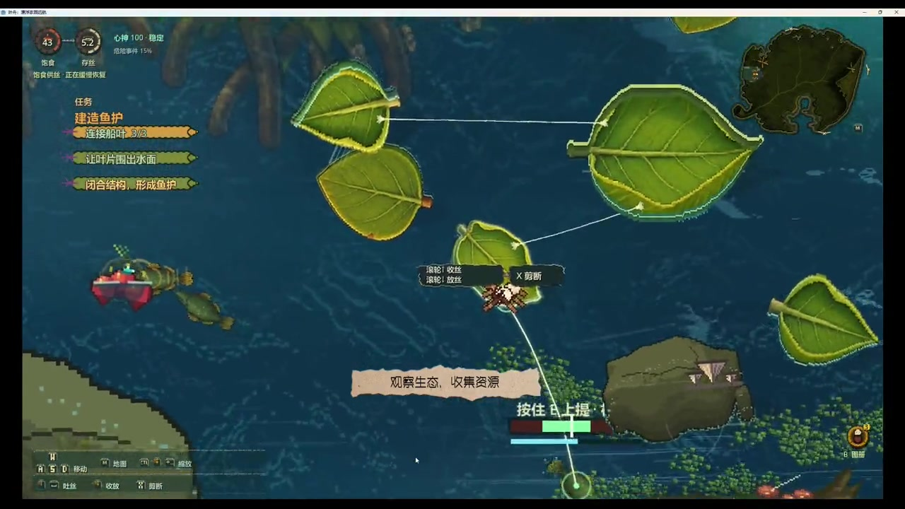
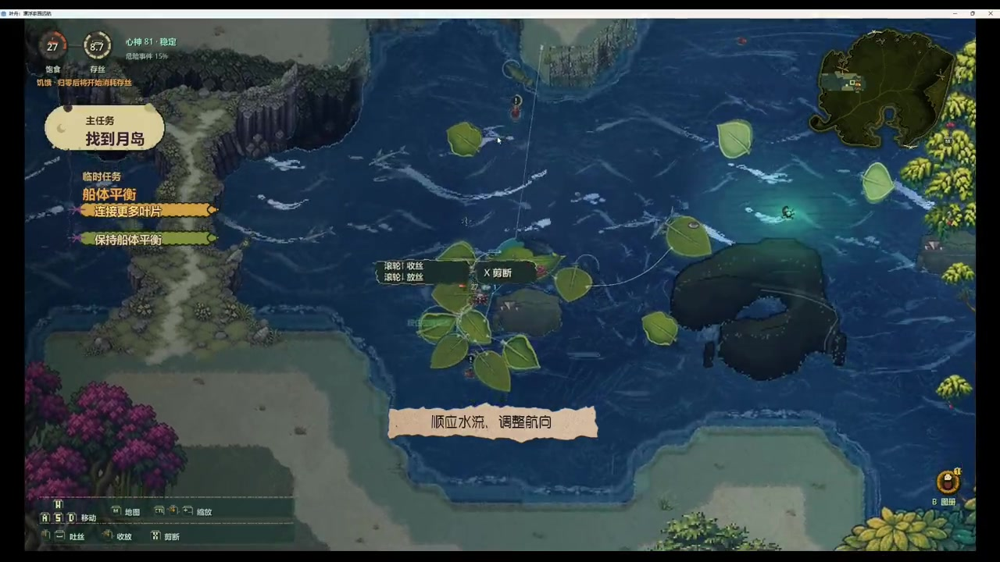
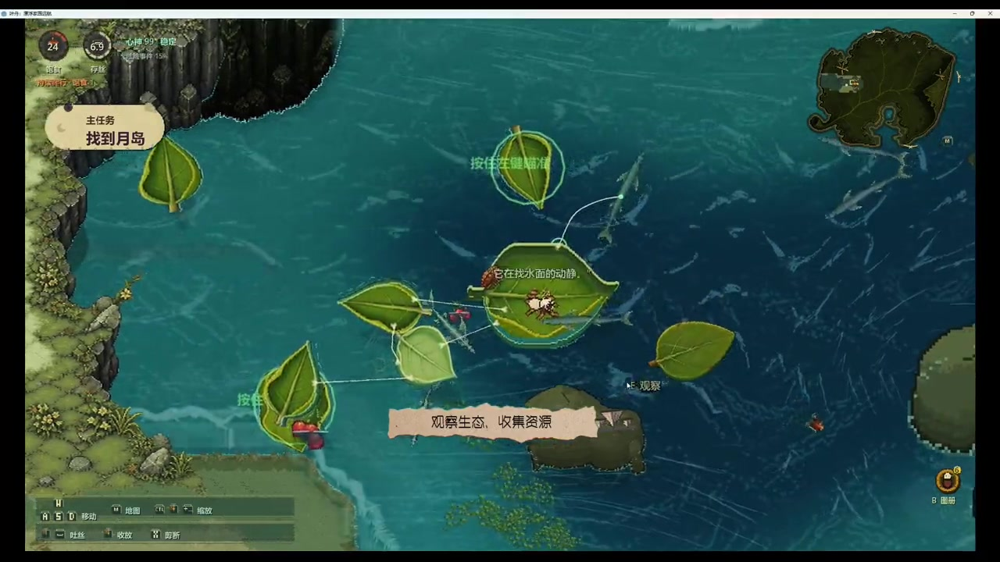
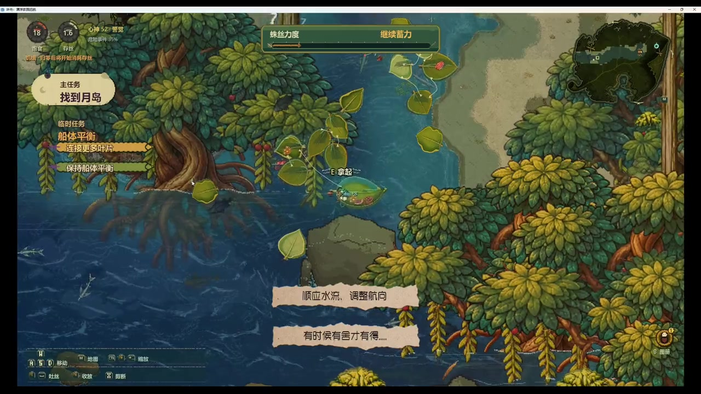
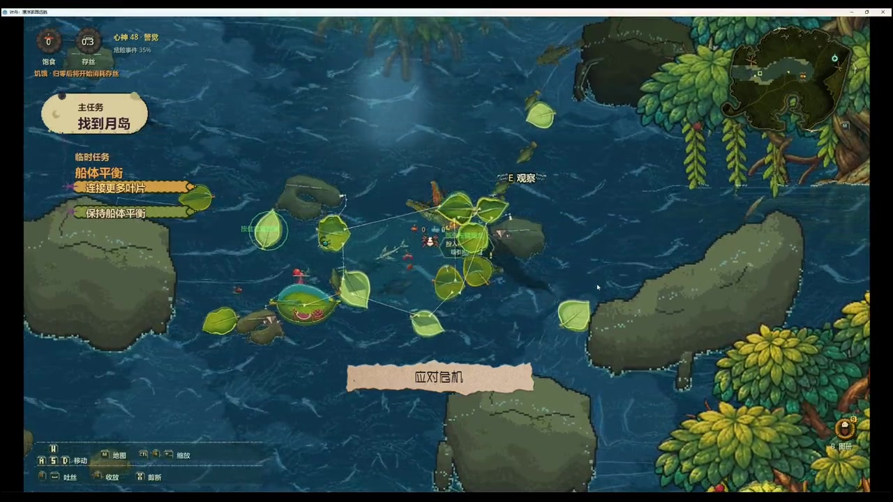

项目介绍
叶舟
水上生存建造冒险游戏
玩家操纵蜘蛛收放蛛丝、调整锚点，并借助牵引改变船只航向；探索中获得的资源用于维持补给与扩建叶舟。系统重点是让“连接”同时作用于移动、采集与建造，使几个循环自然衔接。
- 职责
- 系统策划 · 独立开发
- 进度
- 独立完成可玩原型
- 工具
- Godot
项目演示
完整玩法演示
蛛丝牵引、船体移动、水上探索与资源获取。
03:55

系统设计
规则联动
基础规则是“吐丝建立连接，收丝拉动物体”。物体位置、连接关系与整体重量随操作改变，并继续影响资源、生存、搭建、航行和周围生物。
获取食物维持吐丝能力，连接叶片调整航行结构；水流与周围生物持续影响玩家选择。
查看规则闭环与试玩迭代完整规则 · 三轮问题与解决方案
规则闭环
基础规则吐丝建立连接，收丝拉动物体
↓
状态变化物体位置、连接关系与整体运动状态
↓
资源与生存食物被拉近，补充饱食度
水域生态鱼靠近争抢，影响获取
叶舟搭建叶片接入，结构变化
水面航行重量变化，牵引结果变化
状态反馈与操作选择根据当前状态调整目标、连接与收丝方式，进入下一轮判定
试玩迭代
操作理解
问题 吐丝、收丝和物品处理键位分散，玩家需要反复记忆。
解决 将蛛丝操作集中到鼠标按键与滚轮，合并用途相近的物品操作。

探索动力
问题 环境安逸、生存压力偏低，玩家缺少前往目的地的动力。
解决 引入精神状态与河流污染，并用特殊物品提示故事背景。

玩家新用法
问题 玩家把持续刷新的叶片连成道路，削弱了航行必要性。
解决 区分叶片密集区与稀疏区，保留基地搭建，让跨区移动需要航行。
